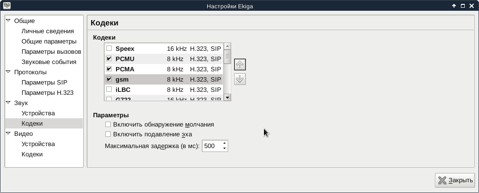
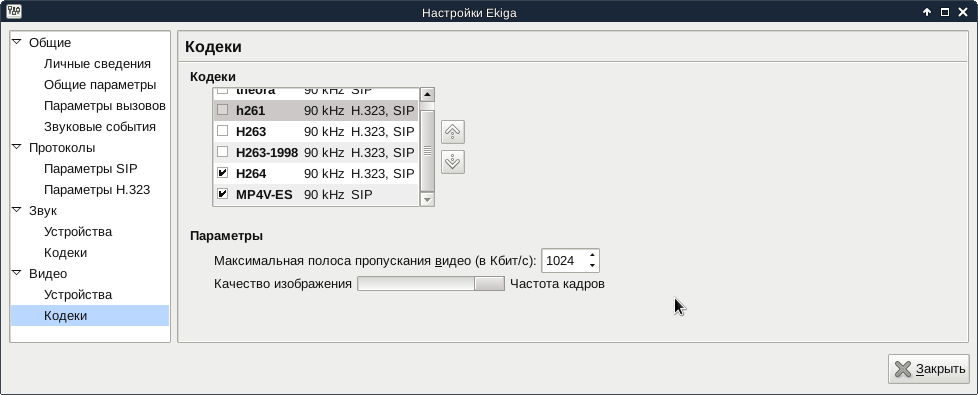
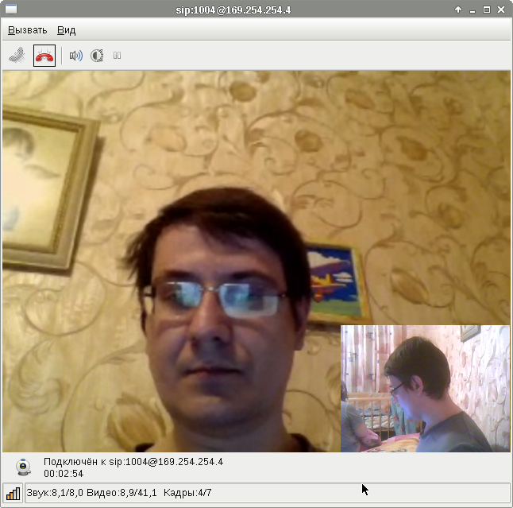

В прошлой заметке Краткий обзор программного телефона и клиента обмена мгновенными сообщениями Ekiga я обмолвился о том, что этот программный телефон позволяет, при наличии веб-камеры, в процессе разговора ещё и обмениваться видео. Я заинтересовался этой возможностью и решил попробовать настроить обмен видео через Asterisk.
Чтобы включить передачу видео через Asterisk, нужно в файле /etc/asterisk/sip.conf в раздел general добавить опцию:
videosupport=yes
Далее, в том же файле в настройках учётных записей SIP, под которыми на Asterisk регистрируются программы Ekiga, нужно явным образом прописать список поддерживаемых кодеков:
disallow=all allow=gsm allow=alaw allow=ulaw allow=h264 allow=h261 allow=mpeg4
Как оказалось, по умолчанию были разрешены только аудиокодеки и один видеокодек h261. Здесь я не указал ещё два возможных видеокодека - h263 и h263p, при использовании которых видео почему-то не работало.
В полученной конфигурации видео будет передаваться между абонентами, подключенными к одной и той же станции. Если же нужно, чтобы видео передавалось между абонентами разных станций, то нужно дополнительно прописать тот же список разрешённых кодеков в настройки SIP-подключений, которыми соединены станции.
Сразу замечу, что передавать видео между разными станциями по протоколу IAX2 мне не удалось.
Далее, чтобы новые настройки вступили в силу, нужно попросить Asterisk перечитать настройки модуля sip:
# asterisk -rx 'sip reload'
Открываем меню "Правка", выбираем пункт "Параметры". В открывшемся окне "Настройки Ekiga" разворачиваем ветку "Звук" и выбираем пункт "Кодеки". Отмечаем только кодеки PCMU (соответствует ulaw в Asterisk), PCMA (соответствует alaw в Asterisk) и gsm:
Теперь разворачиваем в том же окне ветку "Видео" и выбираем в ней пункт "Кодеки". Отмечаем только кодеки H264 и MP4V-ES (соответствует mpeg4 в Asterisk). Можно отметить ещё кодек H261, но с помощью стрелок выставить его приоритет ниже кодека H264. По моему опыту, у него ниже качество (разрешение 176x144) и работает он менее стабильно (может рассыпаться на крупные кубики). Кодеки H263 и H263-1998 (соответствует h263p в Asterisk) у меня не заработали, поэтому их использование отключил.
Когда всё заработало, выглядело это вот так:
Я сидел за компьютером с ноутбуком на коленях, поэтому в окне меня видно с двух сторон :) Гарнитура была подключена только к одному из компьютеров и лежала на столе.
Стоит приготовиться к тому, что видео не заработает сразу и придётся подбирать кодеки, с которыми оно, наконец, заработает.
В следующей заметке я рассмотрю программный телефон SFLphone. Эта программа обладает функциями, которые окажутся очень полезными для секретарей, операторов, диспетчеров. То есть - для людей, которые занимаются обработкой звонков и которым часто бывает нужно обрабатывать несколько звонков одновременно, соединять абонентов между собой и ставить звонки в очередь, пока занят абонент, на которого нужно переключить звонящего.